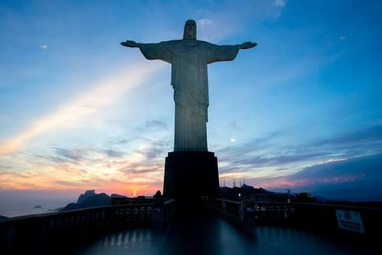
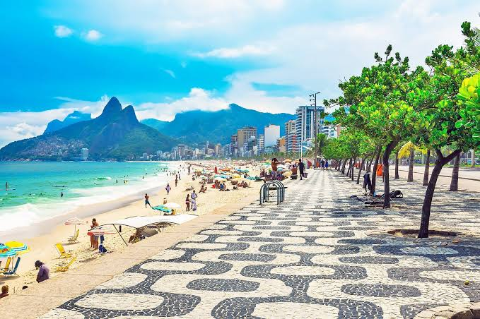
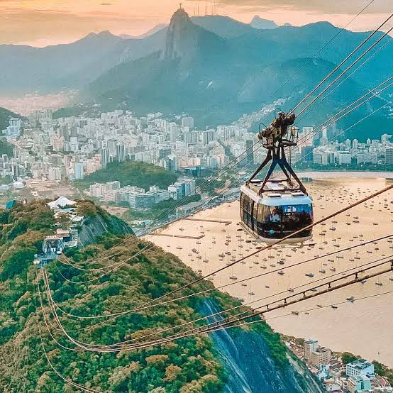

🏝️ O Início e a Disputa Colonial (1502–1567)
Em janeiro de 1502, navegadores portugueses avistaram a Baía de Guanabara. Pensando tratar-se da foz de um grande rio, batizaram o local de Rio de Janeiro. Inicialmente, os portugueses não colonizaram a região, o que abriu espaço para que franceses invadissem a área em 1555 para fundar a colônia "França Antártica".
Para expulsar os invasores, o militar português Estácio de Sá fundou oficialmente a cidade de São Sebastião do Rio de Janeiro em 1º de março de 1565. Após dois anos de batalhas sangrentas e com o apoio dos indígenas Temiminós, os franceses foram definitivamente expulsos em 1567.
💰 A Rota do Ouro e a Primeira Capital (1600–1808)
Durante o século XVII, a cidade cresceu como exportadora de açúcar. No entanto, a grande virada ocorreu no século XVIII com a descoberta de ouro em Minas Gerais. O porto do Rio tornou-se o ponto oficial de escoamento das riquezas para a Europa. Por conta dessa enorme importância econômica e estratégica, a capital da colônia foi transferida de Salvador para o Rio de Janeiro em 1763.
👑 A Corte Europeia nos Trópicos (1808–1889)
Em 1808, fugindo das tropas de Napoleão, a Família Real Portuguesa e toda a sua corte desembarcaram no Rio. Da noite para o dia, a cidade deixou de ser uma província colonial para se tornar a sede do Império Português.
O Rio passou por uma explosão cultural e institucional, ganhando o Banco do Brasil, a Biblioteca Nacional e o Real Horto (atual Jardim Botânico). Com a Independência em 1822 e, mais tarde, com o auge do ciclo do café, a cidade consolidou-se como a grande metrópole e capital do Império do Brasil.
🏗️ A Modernização e a República (1889–1960)
Com a Proclamação da República em 1889, o Rio precisava parecer uma capital moderna aos olhos do mundo. No início do século XX, o prefeito Pereira Passos liderou a reforma "Bota-Abaixo", que demoliu cortiços e ruelas coloniais para abrir avenidas inspiradas em Paris, como a atual Avenida Rio Branco.
Esse processo de higienização urbana empurrou as populações mais pobres para os morros, acelerando o surgimento das primeiras favelas. Paralelamente, a cidade vivia sua "Época de Ouro" cultural, vendo nascer o samba moderno e, décadas mais tarde, a bossa nova.
🌅 A Perda da Capital e o Rio Moderno (1960–Presente)
Em 21 de abril de 1960, o Rio de Janeiro deixou de ser a capital federal, que foi transferida para Brasília. Entre 1960 e 1975, a cidade funcionou como o Estado da Guanabara, até fundir-se com o restante do território fluminense.
Apesar de perder o poder político central, o Rio manteve-se como a principal vitrine cultural e turística do Brasil para o exterior. Nas últimas décadas, a cidade enfrentou profundos desafios socioeconômicos e de segurança pública, mas também viveu momentos de projeção global ao sediar a final da Copa do Mundo de 2014 e os Jogos Olímpicos de 2016. Hoje, a "Cidade Maravilhosa" segue como um dos maiores patrimônios culturais do planeta


